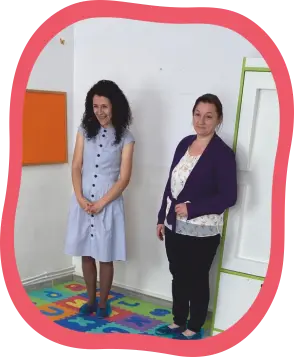
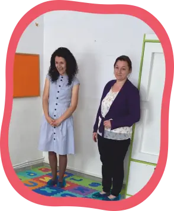

Prin intermediul grădiniței noastre dorim să transmitem valori morale care să modeleze caracterul copiilor noștri. Pornind de la această premisă, ne propunem, prin proiectul grădiniței, să-i învațăm pe copii calea pe care să meargă în viață, mai concret să le clădim personalitatea și caracterul pe temelii solide, constând în principii, standarde și valori biblice, asigurând astfel garanția formării unor cetățeni demni, onești, valoroși, creativi pentru societatea românească.
 
